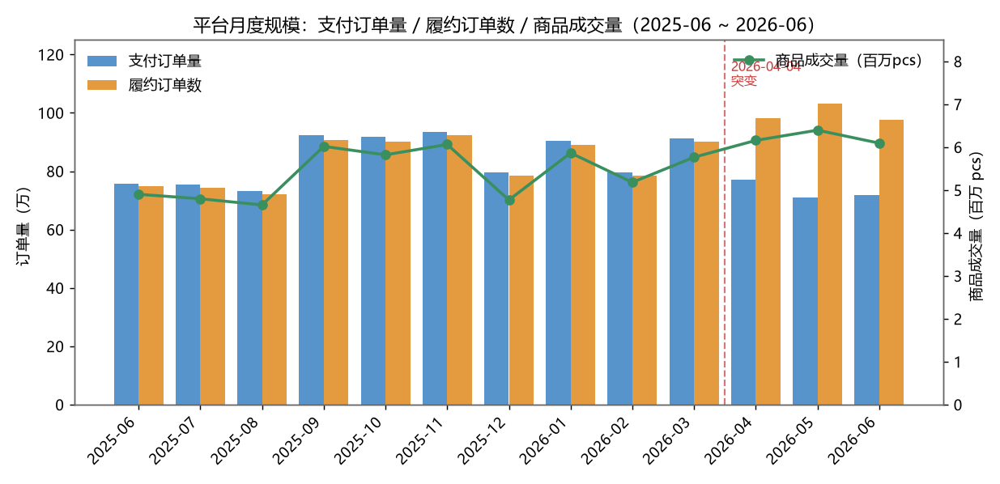
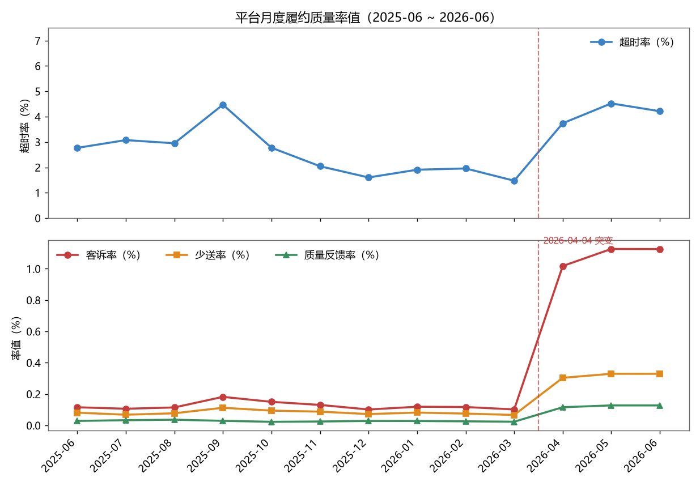
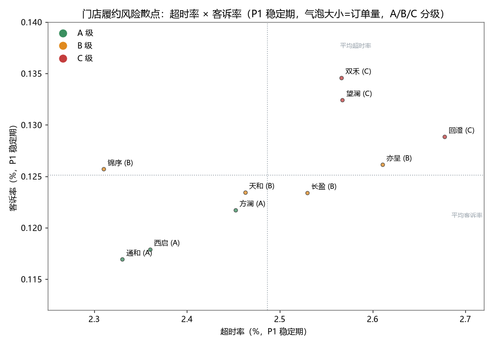
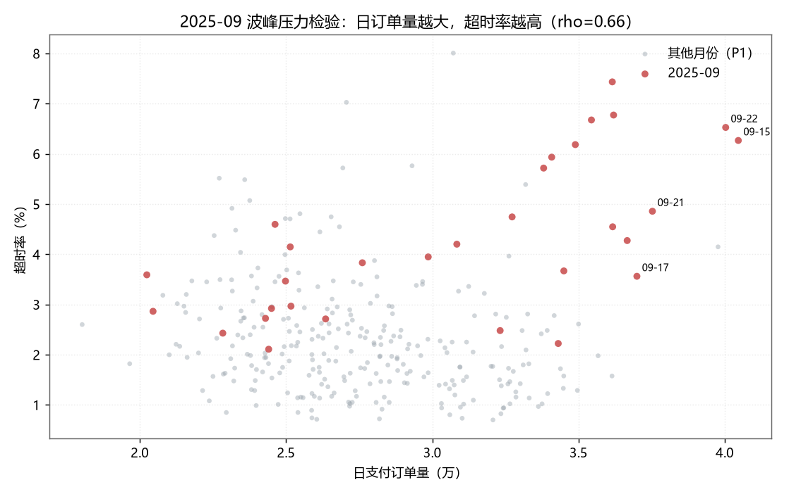
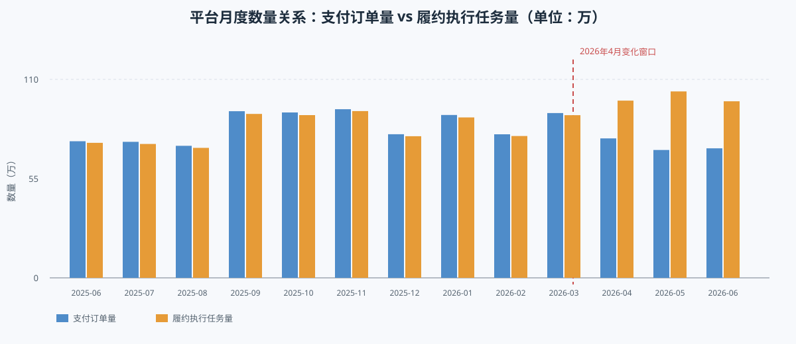
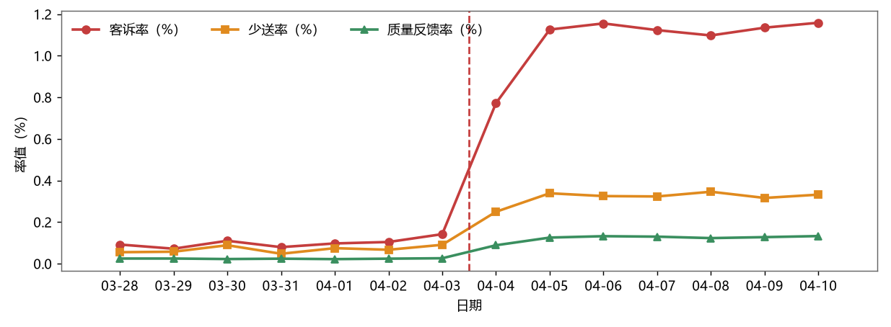
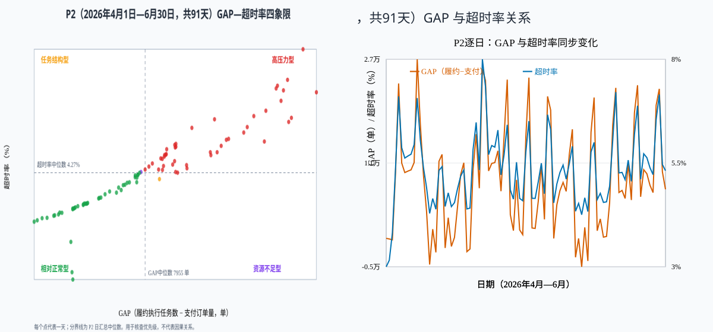

0管理层一页结论
- 发现了什么：2026 年 4 月起，平台四类履约质量率同步上升，10 家门店也出现相近变化，异常更像平台级现象。
- 排除了什么：门店体量接近、P2 客诉增量分布较均匀，当前不宜把异常归因于某一家或少数几家门店。
- 最大疑点：支付订单量下降，但履约执行任务量上升，说明跨层级单据关系发生变化，应优先核查口径、任务生成规则和多单分拣上线情况。
- 下一步怎么做：先核对指标字典、取数 SQL、系统变更和单据映射；确认口径一致后，再判断是否需要优化分拣、排班和配送运力。
证据分层：“2026 年 4 月上旬同步跳变”和“跨层级数量关系变化”是数据事实；“口径、规则或多单分拣变化”是强线索；真实原因仍需业务、数据和系统记录共同验证。
1背景与目标
本报告基于即时零售前置仓自营履约业务场景。业务模式为：社区前置仓囤货 → 站内分拣复核 → 同城即时配送，关键履约环节包括支付、分拣、交付及售后反馈。
本报告聚焦以下三问：
- Q1：平台整体履约表现随时间如何变化？
- Q2：不同门店之间的履约质量是否存在显著差异？哪些门店需要重点关注？
- Q3：导致履约质量异动的主要因素是什么？哪些可以通过运营动作改善？
三问直答
| 问题 | 明确结论 | 主要证据 | 报告对应章节/行动 |
|---|
Q1
平台整体表现如何变化？ | 整体呈“前稳后异”：2026 年 4 月之前相对稳定，4 月起四类质量率同步抬升，且支付订单与履约执行任务的跨层级数量关系发生变化。 | 月度趋势、4 月前后变化、跨层级数量差异 | 第 3、5 章；先核查单据链路，再进行跨期评价 |
Q2
门店差异是否显著？ | P1 稳定期存在有限的相对差异，但整体差距较小；P2 各店相近幅度恶化，当前不宜把异常归因于少数门店。 | 门店排名、风险散点、客诉增量占比、CV | 第 4 章；A 级作流程对照，C 级作验证样本 |
Q3
主要因素及可改善项是什么？ | 主要线索包括多单分拣模式切换带来的任务结构变化，以及高量日、周末运力压力；前者待核验，后者可通过运力和时段管理改善。 | 跨层级数量差异、4 月上旬变化窗口、9 月量率关系、周末超时差异 | 第 5、6 章；先做单据链路核查，再做运力验证和门店流程改善 |
2数据说明
2.1 数据口径
| 字段 | 口径 | 用于计算的指标 |
|---|
| 支付订单量 | 用户完成支付的订单数 | 规模、超时率分母 |
| 履约订单数 | 已完成履约的订单数 | 规模、客诉率 / 少送率分母 |
| 超时订单数 | 时效偏差订单数 | 超时率 = 超时订单数 / 支付订单量 |
| 客诉量 | 履约反馈数 | 客诉率 = 客诉量 / 履约订单数 |
| 少送订单数 | 交付差错反馈数 | 少送率 = 少送订单数 / 履约订单数 |
| 商品成交量（pcs） | 成交商品件数 | 规模、质量反馈率分母 |
| 质量客诉（pcs） | 商品质量反馈件数 | 质量反馈率 = 质量客诉 / 商品成交量 |
2.2 数据质量
- 原始文件共 9182 行，其中尾部 5232 行为空白行，有效记录为 3950 行。
- 有效记录为 10 家门店 × 395 天（2025 年 6 月 ~ 2026 年 6 月），无日期或门店缺失。
- 4 个率值（超时率、客诉率、少送率、质量反馈率）均能用分子 / 分母复算，口径一致。
- 存在 747 行「履约订单数 > 支付订单量」，其中 716 行集中在 2026-04 ~ 2026-06；如果只看“履约比支付多 100 单以上”，则是 688 行。两种数字的筛选条件不同。
2.3 分析阶段划分
| 阶段 | 时间范围 | 定义 |
|---|
| P1（稳定期） | 2025 年 6 月 ~ 2026 年 3 月 | 各项指标稳定、口径正常 |
| P2（异常期） | 2026 年 4 月 ~ 2026 年 6 月 | 四率跳升、履约执行任务/支付订单关系变化 |
切点选择依据见第 5 章「异常解释与验证路径」。
2.4 数据限制与分析边界
当前数据能说明什么
本报告使用每日 × 门店粒度的履约结果数据，能够识别时间趋势、门店差异，以及指标之间是否同步变化；但不能仅凭这些数据还原具体业务环节。
当前数据不能直接说明什么
目前缺少小时级订单、拣货耗时、配送接单与完成时间、缺货、取消、排班和系统变更记录。因此，报告不直接断言异常一定由分拣、配送、库存或商品结构造成，只把这些内容作为后续验证方向。
3平台整体表现
3.1 交易规模：订单量在 P2 出现“支付降、履约升”的背离
| 指标 | P1 稳定期日均 | P2 异常期日均 | 变化 |
|---|
| 支付订单量 | 27,717 | 24,167 | -12.8% |
| 履约订单数 | 27,312 | 32,865 | +20.3% |
| 商品成交量 | 177,112 pcs | 204,942 pcs | +15.7% |
关键观察
P2 支付订单量下降，但履约订单数反而明显上升。正常业务逻辑下，履约订单数不应长期、持续、大幅高于支付订单量。这种背离提示 P2 的“履约订单数”统计口径或业务规则可能发生变化，需在归因时优先考虑。

图 1：平台月度规模走势。2026-04 起支付与履约出现背离（橙色柱高于蓝色柱）。
分析结论：2026-04 起支付订单下降而履约订单上升，二者不再呈正常同步关系；这支持“先核查履约订单口径”的判断，但不能单凭图表证明系统或规则已变更。
3.2 履约质量：P2 四率全面跳升
| 指标 | P1 稳定期 | P2 异常期 | 变化 |
|---|
| 超时率 | 2.50% | 4.15% | +1.65 pct |
| 客诉率 | 0.125% | 1.091% | 约 8.7 倍 |
| 少送率 | 0.082% | 0.321% | 约 3.9 倍 |
| 质量反馈率 | 0.028% | 0.124% | 约 4.4 倍 |

图 2：平台月度履约质量率值。2026 年 4 月起，超时率、客诉率、少送率、质量反馈率同步跳升；其中客诉率升幅最大。
分析结论：P2 四类率值均高于 P1，其中客诉率相对变化最大；这是平台级异常的结果表现，原因仍需结合口径、系统和业务事件核查。
3.3 异常节点
节点 A：2025-09 波峰压力期
- 9 月支付订单量 923,536，为全年次高；超时率 4.47%、客诉率 0.182%、少送率 0.113%，均为 P1 最高。
- 9 月订单量越大的日子，超时和客诉通常也越高；其他月份没有看到同样稳定的关系。因此，这更像 9 月特定高峰现象，不代表订单量一定会导致问题。
- 放量日主要集中在 2025 年 9 月中下旬，部分高量日的超时率超过 6%。
判断：2025-09 的率值上升与订单波峰同步，初步提示可能存在履约弹性不足；但因果关系仍需结合排班、运力、订单时段和商品结构数据验证。
节点 B：2026 年 4 月上旬突变
- 2026 年 4 月之前，履约执行任务/支付订单比长期稳定在约 0.985~0.990。
- 2026 年 4 月上旬，该比值升至约 1.33，客诉率也从约 0.10% 抬升；随后继续升至约 2.24 和 1.13%。
- 04-06 起，所有率值均进入高位平台期，持续至 6 月底。
结论：2026 年 4 月上旬出现明确的平台级突变，不是渐进式恶化。
4门店履约质量
4.1 门店规模：体量高度均匀
10 家门店的支付订单量占比在 9.66%~10.25% 之间，最大差约 0.59 个百分点，可以认为业务体量无显著差异。因此门店间的质量差异不太可能是“大店忙不过来”导致的系统性偏差。
4.2 门店质量排名（P1 稳定期）
口径说明
由于 P2 存在平台级异常，门店排名以 P1 稳定期为准，避免 P2 的口径变化扭曲门店真实水平。
| 排名 | 门店 | 超时率 | 客诉率 | 少送率 | 质量反馈率 | 综合评分 | 综合分级 |
|---|
| 1 | 通和门店 | 2.339% | 0.116% | 0.080% | 0.027% | 7.4 | A |
| 2 | 西启门店 | 2.382% | 0.117% | 0.076% | 0.028% | 15.5 | A |
| 3 | 方澜门店 | 2.480% | 0.121% | 0.080% | 0.027% | 29.1 | A |
| 4 | 天和门店 | 2.455% | 0.123% | 0.078% | 0.028% | 34.1 | B |
| 5 | 锦序门店 | 2.324% | 0.127% | 0.084% | 0.029% | 38.1 | B |
| 6 | 长盈门店 | 2.543% | 0.123% | 0.083% | 0.027% | 45.4 | B |
| 7 | 亦呈门店 | 2.611% | 0.127% | 0.082% | 0.028% | 60.6 | B |
| 8 | 望澜门店 | 2.593% | 0.133% | 0.086% | 0.028% | 75.3 | C |
| 9 | 回澄门店 | 2.698% | 0.129% | 0.086% | 0.029% | 82.8 | C |
| 10 | 双禾门店 | 2.578% | 0.135% | 0.090% | 0.029% | 86.3 | C |
评分方法：先在 10 家门店内对每项率值做 0~100 的 Min-Max 标准化，再按超时率 40%、客诉率 30%、少送率 20%、质量反馈率 10% 加权求和：综合评分 = 0.4×超时标准分 + 0.3×客诉标准分 + 0.2×少送标准分 + 0.1×质量反馈标准分。评分越低越好；按三分位分为 A/B/C 三级。该评分用于相对比较，不代表绝对服务等级。
4.3 门店风险散点图

图 3：P1 稳定期门店风险散点。横轴为超时率，纵轴为客诉率，气泡大小为订单量，颜色为 A/B/C 分级。10 家门店均集中在狭窄的带状区域，差异有限。
分析结论：门店点位集中，说明 P1 的门店差异存在但幅度有限；C 级门店可作为复盘样本，不能仅凭散点图认定其为 P2 异常根因。
重点关注：以 P1 门店平均超时率和平均客诉率为分界，右上象限的亦呈、望澜、回澄、双禾同时表现为相对较高的超时率和客诉率，应优先核查排班、拣货、交接和客诉明细。其中双禾、望澜、回澄的客诉率相对更高；该结果用于确定复盘优先级，不等同于确认门店责任。
4.4 门店级 vs 平台级：P2 是同步恶化
- P1 阶段门店间客诉率 CV 为 4.90%，P2 为约 1.16%，说明按整月汇总后，各店 P2 客诉率水平更集中。
- P2 客诉增量按门店拆分占比 8.45%~11.93%，整体仍接近均分，未显示由少数门店主导。
结论
P2 的恶化不是“某几家门店单独出问题”，而是 10 家门店以相近幅度同步恶化。问题根因应在平台级（规则、口径、统一业务事件、系统因素），而非门店运营差异。
5异常解释与验证路径
5.1 怎么判断
- 先看时间趋势，再比较门店，最后核对订单口径和业务事件。
- 区分“水平跳变”（2026 年 4 月上旬四率同步抬升）和“波动形态”（异常期内部的日内/日际波动）。
- 同步变化只能作为线索，不能直接当成因果证明。
5.2 2025 年 9 月：订单高峰时更容易超时
- 9 月日支付量与超时率、客诉率均呈显著正相关（rho=0.66、0.73）。
- 2025 年 9 月中下旬的高放量日超时率超过 6%，处于稳定期较高水平。
- 10 月起订单量回落，率值同步回落。
图表结论与边界图 4 支持“9 月高量日与超时率同向变化”的判断，提示可能存在履约弹性不足；但相关性不是因果关系，仍需排班、运力、时段和商品结构数据验证。

图 4：2025-09 日支付量与超时率关系。9 月订单量越大，超时率越高，呈现明显的波峰压力特征。
分析结论：横轴是日支付订单量，纵轴是当日超时率；9 月红点整体向右上方分布，表示高量日往往伴随更高超时率。
5.3 2026 年 4 月：出现平台级变化


图 5：上图为支付订单量与履约执行任务量月度对比；下图保留原报告中的客诉率、少送率与质量反馈率逐日走势。两部分分别用于观察数量关系和履约质量变化。
分析结论：2026 年 4 月前后多项指标在同一时间窗口发生跳变，支持“平台级变化窗口”判断；图表只能定位异常发生时期，不能单独确定异常原因。
关键证据
- 时期变化明确：2026 年 4 月之前指标相对稳定，4 月起多项指标同步抬升。
- 普遍性：10 家门店同时恶化，且客诉增量占比接近均分。
- 四率内部相关性分化：
- P2 内，客诉率与质量反馈率的日变化高度同步，说明两者可能受到相近因素影响。
- P2 内，超时率与客诉率、少送率、质量反馈率均不相关。
- 通俗解释：P2 内客诉率和质量反馈率的日变化较同步，可能受相近因素影响；超时率与它们不同步，提示超时可能是另一条问题链路。但这只是相关性线索，不等于已证明存在同一原因。
5.4 支付订单与履约执行任务的关系发生变化

图 6：P2（2026 年 4 月 1 日~6 月 30 日，共91天）GAP 与超时率关系。左图为基于 P2 日汇总中位数划分的四象限，右图保留 GAP 与超时率的逐日变化；Spearman r=0.976，四舍五入为0.98。
图表解释：这里的差值不是订单增减 KPI，而是“履约执行任务数 − 支付订单量”的跨层级数量差异。由于一笔支付订单可能对应多个任务，差值不必接近 0；本图只用于观察支付侧与履约执行侧的关系是否在某个时间点发生变化。
- P2 内，跨层级数量差异与超时率的变化高度同步，说明多单分拣任务结构、异常任务或统计时间关系都需要进一步核查。
- P1 阶段执行任务数略低于支付订单量，P2 阶段执行任务数相对更多且波动扩大；这需要结合拆单、合单、补拣、重拣和任务关闭规则解释。
- 履约订单数日均从 P1 的 2.73 万升至 P2 的 3.29 万（+20.3%），而支付订单量从 2.77 万降至 2.42 万（-12.8%）。
优先核查判断
当前最优先核查的是 2026 年 4 月起履约执行任务的生成逻辑、单据链路和多单分拣上线情况。原因是支付订单与履约执行任务的跨层级关系发生变化，且差值与超时率同步变化；但这仍是数据线索，不是已确认事实。
如果确认口径没有变化
如果数据定义、取数逻辑和系统规则在 2026 年 4 月前后均保持一致，那么结论应切换为：平台在 2026 年 4 月起发生了真实的整体履约恶化。这不是少数门店单独造成的，因为 10 家门店都以相近幅度变化；但仅凭当前数据还不能判断具体是分拣能力、配送运力、订单结构，还是其他业务环节导致。下一步应补充小时级订单、拣货耗时、配送接单/完成时间、缺货和取消明细，定位真实瓶颈。
多单分拣是待验证假设
如果 2026 年 4—6 月期间由原来的AB 单分拣切换为多单分拣，系统可能新增批次、拣货任务、补拣或重拣记录，使一笔支付订单对应多条履约执行记录。需要用上线日期、单据映射关系和 AB 单/多单分组数据验证；在验证前，不能把这种关系直接认定为统计错误或真实履约恶化。
重要声明
以上是基于数据相关性的强线索，不是已确认的业务事实。建议下运营结论前，先与数据提供方确认 2026 年 4 月是否存在口径调整、系统升级或业务规则变更；在确认前，不宜把异常期的率值跳升全部归因于真实履约恶化。
5.4 注释：GAP—超时率异常分类与核查逻辑
为避免把跨层级的 GAP 直接解释为业务损失，本报告将 P2 每日 GAP 与超时率分别同各自的 P2 中位数比较，用于确定核查优先级。
| 异常类型 | GAP | 超时率 | 分析含义 | 优先核查方向 |
|---|
| 高压力型 | 高 | 高 | 履约任务差额扩大且时效同步恶化 | 分拣能力、排班、配送运力、峰值订单 |
| 任务结构型 | 高 | 低 | 任务数量偏多，但暂未明显影响时效 | 多单分拣、拆单、补拣、重拣、任务生成规则 |
| 履约资源不足型 | 低 | 高 | 任务差额不高，但时效已经恶化 | 库存、拣货、配送交接、系统下发 |
| 相对正常型 | 低 | 低 | 暂未发现明显异常信号 | 持续监控并作为对照样本 |
5.5 其他辅助发现
- 周末效应：P1 周末超时率略高于工作日（2.57% vs 2.47%）；P2 周末超时率显著高于工作日（5.50% vs 3.60%），但客诉率无显著差异。P2 的周末运力紧张有所加剧。
- 规模-质量关系：P1 阶段门店规模与超时率、客诉率、少送率均无显著相关；仅与质量反馈率有中等正相关（rho=0.64，p=0.048），但 10 店样本较小，不视为稳定规律。
6运营建议
建议分成两类：当前数据可以支持的动作，以及需要补充数据后才能确认的动作。
6.1 建议闭环：动作—数据—判断标准
| 优先级 | 验证/动作 | 所需数据 | 判断标准 |
|---|
| P0 | 核查履约执行任务定义及 2026 年 4 月前后 SQL/指标逻辑 | 指标字典、取数 SQL、系统变更记录 | 确认前后口径是否一致，并解释跨层级数量关系变化 |
| P0 | 按统一口径重算 P1/P2 指标 | 支付订单、完成履约订单、取消/异常订单明细 | 若重算后跳变明显收窄，优先判定为口径/规则影响 |
| P1 | 拆解周末超时问题 | 小时订单、分拣耗时、配送接单量、运力排班 | 定位到具体时段或环节后，再配置周末资源 |
| P2 | 用 A 级门店作流程对照、C 级门店做小范围复盘 | 拣货、复核、缺货、客诉明细 | 找到可复制流程证据后再推广，不据评级直接认定根因 |
当前可以支持的动作
- 先做口径核查：核对指标字典、取数 SQL 和系统变更记录，确认 2026 年 4 月起履约执行任务数的定义是否变化。
- 建立高峰预警：以 2025 年 9 月高量日为参考，持续关注订单量上升时超时率是否同步上升。
- 做门店复盘：将 A 级门店作为流程对照，将 C 级门店作为复盘样本，但不直接把门店评级当作异常原因。
需要补充数据后再做
- 人员和运力调整：只有补充小时级订单、拣货耗时、配送接单与完成时间后，才能判断是否需要增加拣货员、骑手或调整排班。
- 库存和商品调整：只有补充缺货、取消和商品结构数据后，才能判断是否需要调整库存或商品策略。
- 多单分拣判断：目前只能把 AB 单分拣切换为多单分拣视为待验证假设，需要上线日期、单据映射和任务明细确认。
针对 2025-09 波峰压力
- 波峰运力弹性：在 9 月等历史高量月份提前储备分拣与配送人力。
- 动态截单 / 分时段预约：在大促或放量日引导用户分时段下单，平滑波峰。
- 高量日重点监控：对日订单量超过 3.5 万单的日期启动预警机制。
针对门店质量差异
- A 级门店作为流程对照样本：通和、西启、方澜在 P1 稳定期表现较好，可核查其分拣动线、复核流程是否存在可复制做法。
- C 级门店作为验证样本：双禾、回澄、望澜相对靠后，可专项复盘超时和客诉环节，但不据此直接认定门店是 P2 异常根因。
- 注意：门店间差异较小，P2 又同步恶化，因此门店治理应作为持续改善项，而非当前异动的首要抓手。
针对周末效应
- 周末运力倾斜：P2 周末超时率显著高于工作日，建议在周末增加分拣与配送资源。
- 周末提前备货：若周末订单结构可预测，可提前至周五完成部分热销品备货。
数据治理建议
- 统一“履约订单数”与“支付订单量”的定义边界，避免同一指标在不同时间段口径不一致。
- 建立异常切点监控：当履约 / 支付比值连续 3 天超过 1.05 时自动预警。
- 对率值指标保留分子分母明细，便于口径核对。
7总结
- 平台整体：13 个月呈现“前稳后异”格局。P1（2025 年 6 月~2026 年 3 月）履约质量稳定；P2（2026 年 4 月~2026 年 6 月）四率全面跳升，且支付订单与履约执行任务的关系发生变化。
- 异常节点：
- 2025-09：波峰压力导致量-率同升，属于可预期的运营压力。
- 2026 年 4 月上旬：平台级突变窗口，10 家门店同步恶化，且支付订单与履约执行任务的关系出现明显变化，可能与多单分拣或任务规则有关。
- 门店差异：10 家门店体量接近，P1 阶段质量差异很小；P2 阶段各店变化幅度接近。当前证据更支持平台级线索，但还不能排除门店执行、商品结构或其他共同因素。
- 假设检验：
- 超时率与客诉率在月粒度和 P1 日粒度上均显著正相关，但在 P2 内部不相关，说明 P2 的两者驱动机制不同。
- 客诉率与质量反馈率在 P2 内部的相关性需按整月口径重新计算；即使相关，也只能作为共同变化线索，不能直接证明同一原因。
- 下一步：建议在启动大规模运营动作前，先确认 2026 年 4 月是否存在多单分拣上线、任务规则调整或口径变化。只有在单据链路明确的基础上，才能准确评估运营改善效果。
8附录：核心数据速查
| 指标 | 全周期 13 个月 | P1 稳定期 | P2 异常期 |
|---|
| 支付订单量 | 10,625,051 | 8,425,888 | 2,199,163 |
| 履约订单数 | 11,293,661 | 8,302,927 | 2,990,734 |
| 商品成交量 | 72,491,837 pcs | 53,842,086 | 18,649,751 |
| 超时率 | 2.84% | 2.50% | 4.15% |
| 客诉率 | 0.38% | 0.13% | 1.12% |
| 少送率 | 0.15% | 0.08% | 0.33% |
| 质量反馈率 | 0.053% | 0.028% | 0.124% |
9附录：补充计算说明（正文未详述口径）
本附录只补充正文中出现但未说明算法的计算项；已在 2.1 数据口径中定义的超时率 / 客诉率 / 少送率 / 质量反馈率公式，以及 2.3 的 P1 / P2 时间段定义，此处不再重复。
C1. 累计、日均与分阶段天数
- 全周期累计（如支付订单量 10,625,051）= 10 家门店 × 395 天逐日记录加总。
- 阶段计算范围：P1 为 2025 年 6 月 1 日~2026 年 3 月 31 日，共 304 天；P2 为 2026 年 4 月 1 日~2026 年 6 月 30 日，共 91 天。全文均按这两个整月阶段计算。
- 日均 = 阶段累计 ÷ 阶段天数。例：P2 支付日均 = 2,199,163 ÷ 91 = 24,167；P1 支付日均 = 8,425,888 ÷ 304 = 27,717。
- 全周期率值（附录速查表中的 2.84% 等）= 全周期分子加总 ÷ 分母加总，不是逐月率值求平均。
C2. 变化幅度口径：变化率 / 变化倍数 / 百分点
| 正文写法 | 计算方式 | 示例 |
|---|
| 规模变化率（−12.8% 等） | (P2日均 − P1日均) ÷ P1日均 × 100% | (24,167−27,717)÷27,717 ≈ −12.8% |
| 率值变化倍数（约 8.7 倍等） | P2 率值 ÷ P1 率值 | 1.091% ÷ 0.125% ≈ 8.7 倍 |
| 率值差（+1.65 pct） | P2 率值 − P1 率值（单位：百分点） | 4.15% − 2.50% = +1.65 pct |
易混淆点
“百分点（pct）”是率值的直接相减；而“变化倍数”是率值的相除。例如超时率从 2.50% 升至 4.15%，相差 1.65 个百分点，约为 1.7 倍——两者不能混用。
C3. 支付订单与履约执行任务的跨层级关系
- 执行任务/支付订单比 = 履约执行任务数 ÷ 支付订单量。全周期 = 11,293,661 ÷ 10,625,051 = 1.063；按整月汇总，P1 = 8,302,927 ÷ 8,425,888 ≈ 0.985，P2 = 2,990,734 ÷ 2,199,163 ≈ 1.360。
- 由于一笔支付订单可能拆成多个执行任务，该比值不应直接解释为异常订单率，也不要求接近 1；它用于观察跨层级单据关系是否发生变化。多单分拣上线、补拣、重拣和任务关闭规则都可能影响该比值。
- 聚合原则：任何跨店 / 跨天 / 跨月汇总，一律先加总分子、分母，再相除；不取各时段率值的算术平均。单日、单店率值则直接用当日 / 当店分子 ÷ 分母。
C4. Spearman 秩相关系数与 p 值
ρ = 1 − 6·Σd² ÷ [ n·(n²−1) ] （d = 每个样本在两列中的名次之差，n = 样本天数）
计算四步：① 每天记录两个指标值；② 各自从小到大排成名次（秩）；③ 逐天求两列名次之差 d，平方后加总得 Σd²；④ 代入公式。名次完全对齐时 Σd²=0、ρ=1；错位越严重，从 1 中扣掉的越多。
5 天迷你示例（客诉率 vs 质量反馈率）：两天名次差各为 ±1，其余全对齐 → Σd² = 2 → ρ = 1 − 6×2 ÷ [5×(25−1)] = 0.90。
本报告实际案例：P2 段客诉率 vs 质量反馈率，相关分析样本范围为 2026 年 4 月~6 月，共 91 天；正文相关系数应以整月口径重新计算后使用。
p 值 = 两指标实际无关时，纯凭偶然得到当前相关强度的概率。本例 p = 5.5×10⁻³⁰（趋近于零），故写为 p<0.001，统计高度显著。
| 报告位置 | rho | 样本 |
|---|
| 2025-09：日支付量 vs 超时率 / 客诉率 | 0.66 / 0.73 | 9 月 30 天 |
| P2：客诉率 vs 质量反馈率 | 待按整月重算 | P2 91 天 |
| P2：跨层级数量差异 vs 超时率 | 0.976 | P2 91 天 |
| P1：门店规模 vs 质量反馈率 | 0.64（p=0.048） | 10 家门店 |
为何使用排序相关性：率值数据存在偏态与异常时期，排序相关性只看高低次序是否同步，对极端值相对更稳健，更适合回答“客诉高的时期，质量反馈是否也更高”这类问题。
C5. 变异系数 CV（门店离散度）
CV = 标准差 ÷ 均值 × 100%
用于衡量 10 家门店某指标相互间的离散程度：按整月口径，P1 客诉率 CV = 4.90%，P2 = 1.16%，说明 P2 各店客诉率水平更加接近，支持“全平台同步变化”的判断。
C6. 门店占比类指标
- 门店支付占比（9.66%~10.25%）= 该店支付订单量 ÷ 全平台支付订单量 × 100%。
- 客诉增量占比（8.45%~11.93%）= 该店（P2 客诉量 − P1 客诉量）÷ 全平台（P2 客诉量 − P1 客诉量）× 100%，用于判断恶化是否被个别门店主导。
C7. 门店综合评分与分级公式
minmax(指标) = (该店值 − 10 店最小值) ÷ (10 店最大值 − 10 店最小值) × 100
综合评分 = 0.4·minmax(超时率) + 0.3·minmax(客诉率) + 0.2·minmax(少送率) + 0.1·minmax(质量反馈率)
评分越低越好（各率越低，标准化后贡献越小）；按 P1 期评分升序三等分：A 级（前 1/3）最优、C 级（后 1/3）需重点跟进。权重反映履约质量影响优先级：时效 > 客诉 > 差错 > 商品质量。分级思路正文 4.2 已述，此处补充具体公式。
C8. 周末 / 工作日口径
周末 = 周六、周日；工作日 = 周一至周五。周末率值 = 周末各日分子加总 ÷ 分母加总（不取各日率值平均）。正文“周末效应”中的 2.57% / 2.47%（P1）、5.50% / 3.60%（P2）均按此口径计算；超时率分母为支付订单量。
解读边界
相关 ≠ 因果：本节所有相关系数仅描述“同涨同跌”的程度，不构成因果证明；P2 相关系数应以 2026 年 4 月~6 月的 91 天整月样本重新计算后解读。